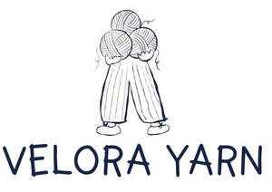

Trade Mark Journal No.2026/010 6 March 2026
UK00004341801 17 February 2026 (23)

- Class 23
- Yarn; Knitting yarn; Worsted yarn; Wool yarn; Angora yarn; Chenille yarn; Knitting yarns; Chenile yarn; Spools of yarn; Cotton yarn; Worsted thread and yarn; Sewing yarn; Silk yarn; Embroidery yarn; Darning yarn; Wool thread and yarn; Rayon yarn; Jute yarn; Spun yarn; Knitting yarns made of wool; Linen yarn; Hemp yarn; Woolen thread and yarn; Woollen thread and yarn; Elastic yarn; Coir yarn; Hair yarn; Eiderdown yarn; Synthetic yarn; Spun silk yarn; Cotton thread and yarn; Twisted wool thread and yarn; Cashmere yarns; Knitting yarns made of nylon; Sewing thread and yarn; Jute thread and yarn; Twisted yarn; Rayon thread and yarn; Silk thread and yarn; Sewing yarns; Darning thread and yarn; Spun thread and yarn; Flax thread and yarn; Hand knitting yarns; Embroidery thread and yarn; Waxed yarn; Synthetic fiber thread and yarn; Hemp thread and yarn; Spun silk thread and yarn; Ramie thread and yarn; Paper yarn [for textile use]; Textile yarns; Waste cotton yarn; Linen thread and yarn; Glass fiber thread and yarn; Coir thread and yarn; Twisted cotton thread and yarn; Regenerated fiber thread and yarn [for textile use]; Carded yarns in wool for textile use; Douppioni silk yarn; Wild silk yarn; Knitting yarns made of acrylic materials; Wool base mixed thread and yarn; Elastic yarn for textile use; Raw silk yarn; Twisted silk thread and yarn; Yarn and thread for textile purposes; Elastic thread and yarn for textile use; Yarns made of angora for textile use; Carpet yarns; Semi-synthetic fiber thread and yarn [chemically treated natural fiber yarn]; Hand spun silk yarn; Cotton threads and yarns; Yarns (Carded -) made of wool; Camel hair yarn; Twisted hemp thread and yarn; Yarns (Elastic -), for use in textiles; Threads and yarns [for textile use]; Silk threads and yarns; Cotton base mixed thread and yarn; True hemp thread and yarn; Yarns made of cotton; Yarns for textile use; Yarns and threads; Yarns, threads; Silk base mixed thread and yarn; Yarns made of silk; Yarn of synthetic or mixed fibres for use in textiles; Hand knitting wools; Carded yarns of hemp for textile use; Chemical fiber base mixed thread and yarn; Hemp threads and yarns; Elastic yarns for textile use; Covered rubber thread and yarn [for textile use]; Yarns and threads for textile use; Carded yarns in natural fibres for textile use; Inorganic fiber base mixed thread and yarn; Hemp base mixed thread and yarn; Twisted mixed thread and yarn; Knitting threads; Chemical-fiber threads and yarns for textile use; Polyester textured yarns; Silica yarns; Ceramic fibre yarns for textile use; Glass yarns for textile use.
Prime 3PL Services LTD